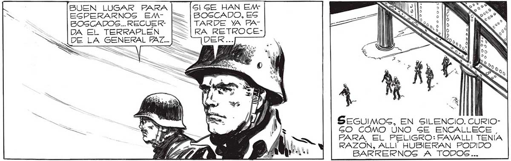
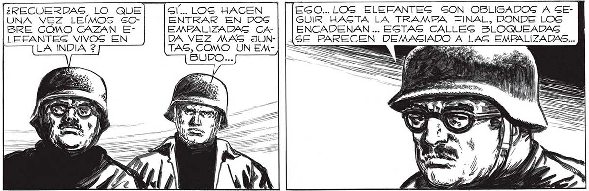
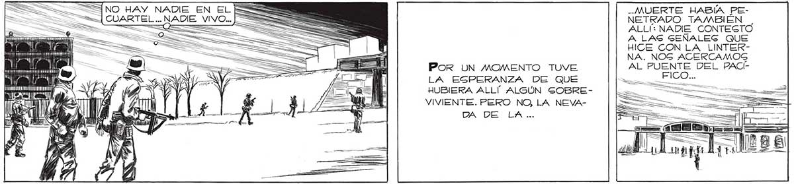

194 = CUARTEL ... NADIE VIVO == NO HAY NADIE EN EL ES = A , >> Q == ===> BUEN LUGAR FARA S1| SE HAN EN EGPERARNOSG EM- [E= |BOSCADO, ES BOGCADOS... RECUER- FE | TARDE YA FHA| DA El TERRAPLEN_ [oo [RA RETROCEE LA GENERAL PAZ... > 0 ¿RECUERDAS LO QUE UNA VEZ LEÍMOS SOBRE CÓMO CAZAN ELEFANTES VIVOS EN LA INDIA 2 GÍ... LOS HACEN EGO... LOG ELEFANTES SON OBLIGADOS A SEENTRAR EN DOS GUIR HASTA LA TRAMPA FINAL, DONDE LOS EMPALIZADAG CA- ENCADENAN ... ESTAS CALLEG BLOQUEADAS DA VEZ MAS JUN- ¡SE FAREGEN a La LAS ii TAS, COMO UN EMBUD Por UN MOMENTO TUVE LA ESPERANZA DE QUE HUBIERA ALLÍ ALGÚN SOBREVIVIENTE. PERO NO, LA NEVADA DE LA.. SEGUIMOSG, EN SILENCIO. CURIOGO CÓMO ÚNO SE ENCALLECE PARA, EL PELIGRO: FAVALL| TENÍA RAZON, ALLÍ HUBIERAN PODIDO BARRERNOSGS A TODOS... EN APUREMOS, FAVA, YA NO ES TIEMPO PARA TEMORES:FRANCO YA ESTA NIDO... HA VIGTO ALGO... .MUERTE HABÍA PENETRADO TAMBIÉN ALLÍ: NADIE CONTEGTO A LAS GEÑALEG QUE HICE CON LA LINTERNA. NOG ACERCAMOS AL PUENTE DEL BPBACIse i TODAG LAS CALLEG LATERALES GIGUEN BLOQUEADAS... CADA VEZ ESTOY MAS GEGURO DE QUE NOG ESTAN ra IN UNA PLAZA ITALIA... Y GEHA DETE


